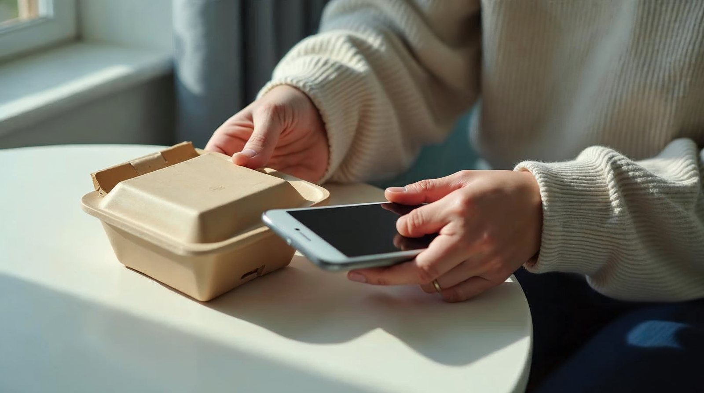
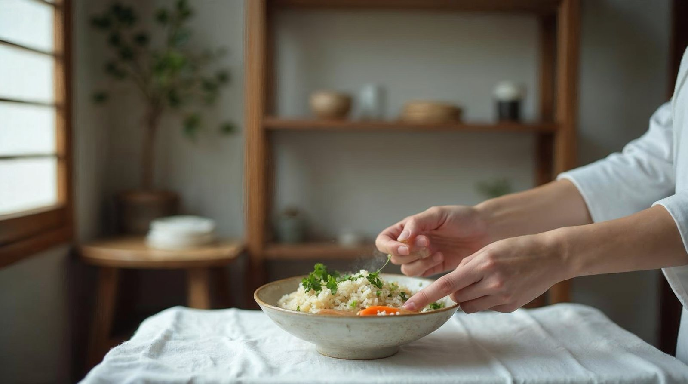

이종호 한의사 감수좋은꿈참사랑한의원 대표원장 (한의사 면허번호 19769)발행 2026-11-24 · 수정 2026-11-25
이 글의 차례
편의점 음식으로 끼니를 해결하더라도 라면이나 삼각김밥 하나에 삶은 달걀, 두부, 샐러드를 더하고 단 음료를 물로 바꾸는 것만으로 식사의 균형을 꽤 바꿀 수 있습니다. 상도동에서 자취하는 학생과 직장인 가운데 요리할 시간과 기운이 없어 편의점 끼니가 이어지다 체중과 검진 수치가 걱정된다는 분이 많습니다.
고르는 조합은 오늘 저녁부터 바꿀 수 있지만, 체중과 수치는 하루하루의 숫자보다 몇 주에 걸친 흐름을 보아야 합니다. 검진에서 혈당·혈압·콜레스테롤 수치가 높아 추가 검사를 권고받으셨다면 생활 조정과 함께 내과 진료를 먼저 받으시고, 한의원에서는 그사이 식사 리듬과 잠, 소화를 함께 살핍니다.
왜 이런 불편이 생길 수 있나요
- 라면, 도시락, 컵국물은 짠 편이라 붓기와 혈압에 부담이 될 수 있습니다.
- 탄산음료와 단 커피는 모르는 사이 하루 당을 크게 늘립니다.
- 채소와 단백질이 부족하면 금방 배가 고파 간식이 늘기 쉽습니다.
- 늦은 시간 혼자 먹는 야식이 습관이 되면 체중과 잠에 함께 영향을 줍니다.
- 혼자 먹으면 휴대폰이나 영상을 보며 빨리 먹게 되어, 배부른 느낌이 오기 전에 많이 먹기 쉽습니다.
- 잠이 부족하면 식욕 조절이 흔들려 늦은 밤 짜고 단 음식이 더 당길 수 있습니다.
먼저 이렇게 여쭙니다
- 하루 끼니 중 편의점 음식이 몇 번 정도인가요?
- 음료는 주로 무엇을 드시나요? 탄산음료, 커피, 물 중 어떤 것이 많나요?
- 최근 건강검진 결과지가 있으신가요?
- 잠드는 시간과 야식 습관은 어떠신가요?
- 하루 중 혼자 먹는 끼니가 몇 번인가요?
- 걷기나 계단 오르기처럼 하루에 몸을 움직이는 시간은 얼마나 되나요?
- 다시 오신 분께는 지난번 이후 고른 편의점 조합과 체중의 흐름부터 이어서 여쭙니다.
일상에서 먼저 해 볼 수 있는 것
- 라면이나 삼각김밥만 먹기보다 삶은 달걀, 두부, 샐러드를 하나 더하기
- 단 음료 대신 물이나 무가당 차 고르기
- 국물은 절반 이상 남기기
- 바로 먹을 수 있는 과일과 채소를 조금씩 사 두기
- 늦게 배고플 때를 대비해 우유나 두부처럼 가벼운 것 준비해 두기
- 편의점에 들어가기 전에 주식 하나, 단백질 하나, 채소 하나로 고를 조합을 미리 정해 두기
- 먹을 때는 영상을 잠시 멈추고 15~20분에 걸쳐 천천히 먹기

상황별 예시
- 예를 들어 점심을 거르고 퇴근길 편의점에서 도시락과 컵라면, 탄산음료를 한꺼번에 사는 직장인의 경우, 밤늦게 짜고 단 음식을 몰아 먹게 되어 아침에 얼굴이 붓고 몸이 무거울 수 있습니다. 오후에 삶은 달걀이나 우유로 허기를 먼저 달래고, 저녁은 도시락 하나에 샐러드를 더하고 음료는 물로 바꾸는 식으로 나눠 볼 수 있습니다.
- 예를 들어 시험 준비로 자취방과 도서관만 오가며 삼각김밥과 에너지 음료로 끼니를 잇는 학생의 경우, 단백질과 채소가 부족해 금방 허기가 지고 간식이 늘기 쉽습니다. 삼각김밥 하나에 두부나 달걀을 더하고, 에너지 음료 대신 물이나 무가당 차를 들고 다니는 것부터 함께 정리해 봅니다.
- 예를 들어 야근이 잦아 주말에만 장을 보는 1인 가구 직장인의 경우, 사 둔 채소가 상해 결국 편의점으로 돌아가는 일이 되풀이되기도 합니다. 씻어 나온 채소나 냉동 채소처럼 오래 두고 먹을 수 있는 것을 조금씩 사 두는 방법을 이야기해 봅니다.
스스로 점검해 보세요
- 하루 두 끼 이상을 편의점 음식으로 해결한다
- 라면이나 컵국물의 국물까지 다 마신다
- 단 커피나 탄산음료를 하루 한 병 넘게 마신다
- 아침을 거르고 밤 10시 넘어 몰아 먹는 날이 많다
- 영상을 보며 10분 안에 식사를 끝낸다
- 지난 검진에서 혈당·혈압·콜레스테롤 중 하나라도 주의나 재검 표시가 있었다
- 1년 사이 체중이 눈에 띄게 늘었는데 이유를 잘 모르겠다
앞의 다섯 가지는 고르는 조합과 먹는 시간부터 바꿔 볼 신호이고, 뒤의 두 가지가 있다면 결과지를 들고 상담을 받아 보세요. 재검 권고가 있었다면 내과 확인을 먼저 받으세요.

한의원에서 함께 살필 수 있는 경우
- 체중과 검진 수치가 함께 걱정되는 경우 식사 리듬과 잠, 활동량을 함께 살핍니다.
- 스트레스를 먹는 것으로 푸는 경우 마음의 긴장도 함께 살핍니다.
- 소화가 불편하거나 변비가 함께 있는 경우 장의 리듬도 이어서 여쭙니다.
좋은꿈참사랑한의원에서는 첫 방문 때 하루 식사 내용과 시간, 잠과 활동량, 검진 결과지를 먼저 함께 보고, 모든 분께 맥부터 짚은 뒤 혀와 배를 살펴 소화 상태를 봅니다. 필요하다고 판단될 때 인바디 770으로 체성분을 확인하고, 당화혈색소 검사기나 혈액 검사기로 수치를 함께 살피기도 합니다.
그 뒤 편의점에서도 고를 수 있는 조합과 식사 시간, 한약 상담 등을 함께 정하며, 진단이나 약이 필요한 수치라면 내과를 먼저 안내합니다. 다음에 오시면 지난번 정한 조합을 지켜 본 기록을 이어서 보고, 필요하면 체성분을 다시 비교하며 계획을 맞춥니다.
얼마나 지켜보고 언제 상담할까요
- 편의점 조합과 음료를 바꾼 뒤 2주는 먹은 것을 적으며 배고픔이 몰리는 시간이 어떻게 달라지는지 보세요.
- 체중과 허리둘레는 매일보다 일주일에 한 번, 같은 요일 아침에 재어 4~8주의 흐름을 보세요.
- 몇 주 동안 조합을 바꿔도 밤늦게 몰아 먹는 일이 줄지 않거나, 스트레스를 받을 때마다 먹는 것으로 풀게 된다면 상담을 권합니다.
- 물을 많이 마시고 소변이 잦으며 체중이 이유 없이 줄어든다면 기다리지 말고 내과 진료를 먼저 받으세요.
이렇게 기록해 오시면 상담이 쉬워집니다
- 사흘 동안 산 편의점 품목(영수증 사진도 좋습니다)
- 음료의 종류와 하루 양
- 최근 검진 결과지
- 잠드는 시각과 야식 횟수
- 일주일에 한 번 잰 체중과 허리둘레
이런 증상은 먼저 확인이 필요합니다
- 물을 많이 마시고 소변이 잦으며 체중이 이유 없이 줄어드는 경우
- 검진에서 혈당이나 혈압이 높아 추가 검사를 권고받은 경우(내과 진료 먼저)
이런 신호가 있으면 한의원보다 가까운 병원이나 응급실을 먼저 찾으세요.
관련 글
- 편의점 도시락·라면으로 끼니를 때우는 날이 많을 때는 무엇부터 바꿔 볼까요?
- 중앙대·숭실대 근처 자취방에서 혼자 밥을 해 먹을 때 식사 리듬은 어떻게 잡나요?
- 건강검진 결과지에서 대사증후군은 어떤 항목을 보나요?

여쭙는 것
- 하루 끼니 중 편의점 음식이 몇 번 정도인가요?
- 음료는 주로 무엇을 드시나요? 탄산음료, 커피, 물 중 어떤 것이 많나요?
- 최근 건강검진 결과지가 있으신가요?
생활에서 해 볼 것
- 라면이나 삼각김밥만 먹기보다 삶은 달걀, 두부, 샐러드를 하나 더하기
- 단 음료 대신 물이나 무가당 차 고르기
- 국물은 절반 이상 남기기
한의원에서 함께 살필 것
- 체중과 검진 수치가 함께 걱정되는 경우 식사 리듬과 잠, 활동량을 함께 살핍니다.
- 스트레스를 먹는 것으로 푸는 경우 마음의 긴장도 함께 살핍니다.
- 소화가 불편하거나 변비가 함께 있는 경우 장의 리듬도 이어서 여쭙니다.
먼저 확인이 필요한 신호
- 물을 많이 마시고 소변이 잦으며 체중이 이유 없이 줄어드는 경우
- 검진에서 혈당이나 혈압이 높아 추가 검사를 권고받은 경우(내과 진료 먼저)
한눈에 보는 표
| 구분 | 핵심 |
|---|---|
| 여쭙는 것 | 하루 끼니 중 편의점 음식이 몇 번 정도인가요? 음료는 주로 무엇을 드시나요? 탄산음료, 커피, 물 중 어떤 것이 많나요? |
| 생활에서 해 볼 것 | 라면이나 삼각김밥만 먹기보다 삶은 달걀, 두부, 샐러드를 하나 더하기 단 음료 대신 물이나 무가당 차 고르기 |
| 한의원에서 함께 살필 것 | 체중과 검진 수치가 함께 걱정되는 경우 식사 리듬과 잠, 활동량을 함께 살핍니다. 스트레스를 먹는 것으로 푸는 경우 마음의 긴장도 함께 살핍니다. |
| 먼저 확인이 필요한 신호 | 물을 많이 마시고 소변이 잦으며 체중이 이유 없이 줄어드는 경우 검진에서 혈당이나 혈압이 높아 추가 검사를 권고받은 경우(내과 진료 먼저) |
자주 묻는 질문
편의점 음식은 아예 끊어야 하나요?
끊기보다 고르는 법을 바꾸는 것이 오래갑니다. 자주 사는 품목을 적어 오시면 함께 조합을 정리해 드립니다.
결과지를 가져가면 도움이 되나요?
네, 지난 검진 결과지를 가져오시면 수치의 흐름을 함께 보고 생활 계획을 세우는 데 도움이 됩니다.
혼자 사는데 요리를 꼭 해야 하나요?
꼭 그렇지는 않습니다. 씻어 둔 채소, 삶은 달걀, 두부처럼 조리 없이 곁들일 수 있는 것부터 시작해도 충분합니다.
편의점에서 고르기 좋은 조합이 있나요?
김밥이나 삼각김밥에 삶은 달걀이나 두부, 샐러드를 더하고 음료는 물로 고르는 식으로 단백질과 채소를 하나씩 더해 보세요.
야식이 당길 때는 어떻게 하나요?
저녁을 너무 이르거나 적게 먹지 않았는지 먼저 살펴보세요. 그래도 배가 고프면 우유나 두부처럼 가벼운 것을 조금 먹고, 잠을 설친 날 더 당긴다면 잠의 리듬도 함께 살펴봅니다.
인바디 검사는 언제 받는 게 좋나요?
같은 조건에서 비교할 수 있도록 식사나 운동 직후는 피하고, 다시 잴 때도 비슷한 시간대에 재는 편이 좋습니다. 검사 가능 시간은 방문 전 전화(02-815-7510)로 확인해 주세요.
좋은꿈참사랑한의원은 재진 때 지난번 이야기부터 이어서 여쭙니다. 진료시간과 예약은 오시는 길에서 확인하세요.
어디서 상담받을 수 있나요?
좋은꿈참사랑한의원은 서울 동작구 만양로2길 2 신성빌딩 3층·5층(서울 동작구 상도동, 7호선 상도역 3번 출구 근처)에 있습니다. 한의사 3명(이종호 대표원장, 조영기 수석진료원장, 정원영 진료원장)이 진료합니다. 진료시간은 평일 09:30~20:00(점심 13:00~14:00), 토·일·공휴일 09:30~15:00이며, 방문 전 전화로 확인을 권합니다. 예약은 네이버 예약, 카카오톡 상담, 전화 02-815-7510로 받습니다.
이 글은 일반적인 건강 정보이며 개인의 진단이나 치료를 대신하지 않습니다. 증상이 있거나 복용 중인 약이 있다면 진료를 통해 확인하세요. 치료 효과는 개인마다 다를 수 있습니다.
작성 기준: 일반적으로 알려져 있는 건강 정보를 참고해 정리했습니다(대표원장 감수). 증상 기록은 1~2주 동안 하루 1회, 비슷한 시간에 적어 오시면 지난 상태와 비교하기 쉽습니다.